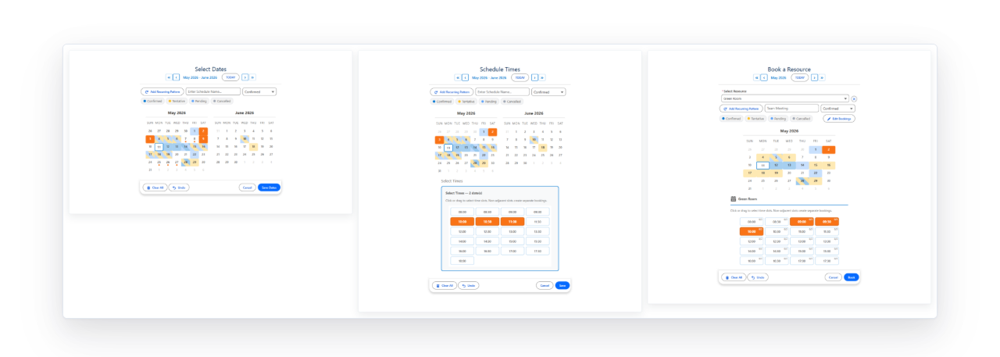

MultiDatePick vs Salesforce Lightning Scheduler
They look like they overlap and mostly they do not. Lightning Scheduler runs an appointment operation on its own data model. MultiDatePick captures dates, times, and bookings into the objects you already have. Here is how to tell which one you need.
Lightning Scheduler is Salesforce's own appointment scheduling product. It is a licensed add-on built around a fixed model of service appointments, service resources, work types, and territories, and it is genuinely strong at what it was designed for: matching a customer to the right qualified person in the right place at the right time.
MultiDatePick is not trying to be that. It is a calendar input component. You point it at your objects, it writes records in the shape you chose, and it goes on any Lightning page, Experience Cloud site, or Screen Flow. If your scheduling problem is not an appointment operation, Lightning Scheduler is a large amount of machinery to adopt.
The honest split
| Capability | Lightning Scheduler | MultiDatePick |
|---|---|---|
| Data model | Its own: service appointments, resources, work types, territories | Yours. Any object, six record shapes |
| Pick many dates at once | Built around one appointment at a time | Core behavior: many dates, ranges, recurring patterns |
| Inside a Screen Flow | Flow templates exist, tied to its model | Native screen component with reusable outputs |
| Skills, territories, and routing | Yes, this is its strength | No. Not what it does |
| Setup effort | An implementation | A wizard, or import a config |
Which one you actually need
One question decides it:
Do you need the person chosen automatically, out of the box, with nothing built?
If yes, Lightning Scheduler ships that. Otherwise MultiDatePick does it: filter the picker down to qualified resources, or let a Screen Flow pick and pass one in. Record page, Flow, or Experience Cloud site.
The longer version, side by side:
Only Lightning Scheduler does
- Automatic skill or qualification matching: a customer picks a slot and the algorithm selects the resource
- Salesforce's prebuilt inbound-scheduling flow for customer self-booking, with the appointment lifecycle already modeled
- Field Service ties to Service Territory, Work Type, and dispatch
- A ready-made ServiceAppointment data model, if you already work in it
Where MultiDatePick pulls ahead
- Pick several dates in one interaction: a real multi-date calendar, not one slot at a time
- Writes into your existing objects: availability, shifts, closures, milestones, whatever you already report on
- Sits inside a Screen Flow you already wrote, with no separate scheduling app
- Configurable from a wizard: status field, resource picker, capacity, edit mode, statuses, colors, filters, all with no code and no project scope
- Any scheduling model you can describe with objects and fields, you can build here

What about the standard Salesforce calendar?
The standard calendar shows Events and object records on a month or week view. It is a viewer, not an input control, and it has no concept of selecting nine dates and creating nine records. If what you need is data capture rather than a read-only view, neither the standard calendar nor a calendar-viewing app is the right tool. That is the gap MultiDatePick was built for.
Not an appointment? Then you probably want this one
Coming to the Salesforce AppExchange in 2026. Tell us where to send the launch note.
100% Salesforce native. Your data and your configuration never leave your org.